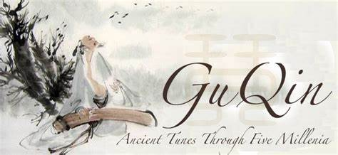
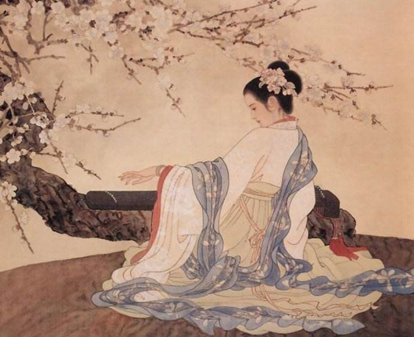
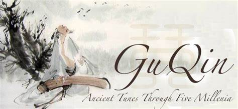
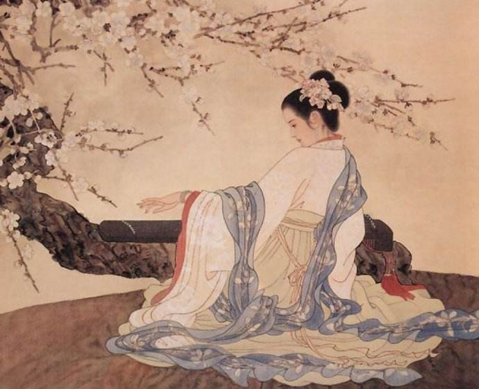
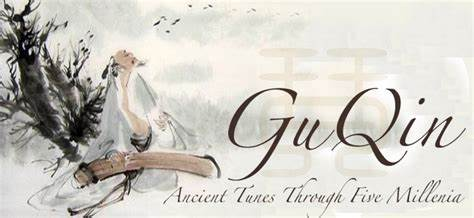
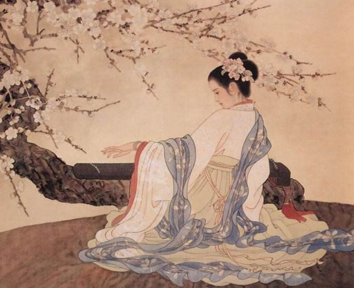

.jpg)  
 
| Homepage |
 
| Homepage |
Guqin, literally "ancient stringed instrument", is the modern name for a plucked seven-string Chinese musical instrument of the zither family. It has been played since ancient times, and has traditionally been favored by scholars and literati as an instrument of great subtlety and refinement, as well as being associated with the ancient Chinese philosopher Confucius. It is sometimes referred as "the father of Chinese music" , meaning "the instrument of the sages.
古琴，又称瑶琴、玉琴、七弦琴，是中国传统拨弦乐器，有三千年以上历史，属于八音中的丝。古琴音域宽广，音色深沉，余音悠远。
古籍记载伏羲作琴，又有神农作琴、黄帝造琴、唐尧造琴等传说；舜定琴为五弦 ，文王增一弦，武王伐纣又增一弦为七弦 ；可见中华古琴文化的源远流长，博大精深。
琴曲存世3360多首琴谱,130多部,琴歌300首。2003年11月7日,联合国教科文组织世界遗产委员会宣布,中国古琴被选为世界非物质文化遗产。2006年被列入中国非物质文化遗产名录。
There are three main tunes in Guqin, namely the "散音","泛音" and "按音". The sounds are tender and deep, leaving listeners a vast room for imagination. Different finger moves will generate different style of sound, sometimes brisk and sometimes emotional. You can feel the mood of the composer and player, and may even reach further to the grand nature.
古琴的三种音，散音、泛音、按音，都非常安静。散音松沉而旷远，让人起远古之思；其泛音则如天籁，有一种清冷入仙之感；按音则非常丰富，手指下的吟猱余韵、细微悠长，时如人语，可以对话，时如人心之绪，缥缈多变。泛音象天，按音如人，散音则同大地，称为天地人三籁。因此古琴一器具三籁，可以状人情之思，也可以达天地宇宙之理。
琴面从外向内由粗及细缚弦七根，古时琴弦用丝质制成，今多用钢弦。古琴最初只有五根弦，内合五行，金、木、水、火、土，外合五音，宫、商、角、徵、羽，象征君、臣、民、事、物五种社会等级，后来周朝周文王、周武王增加文、武二弦，象征君臣之合恩。